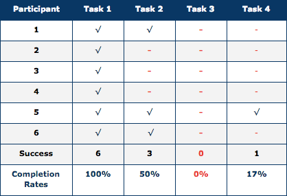
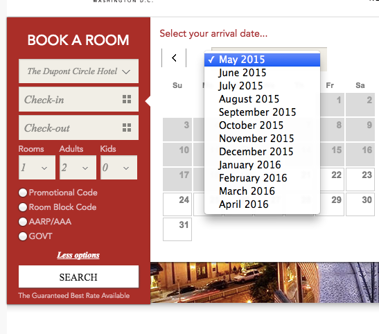
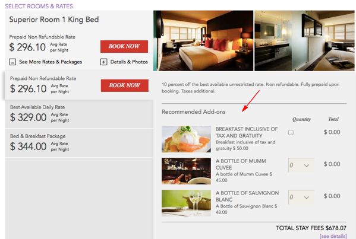
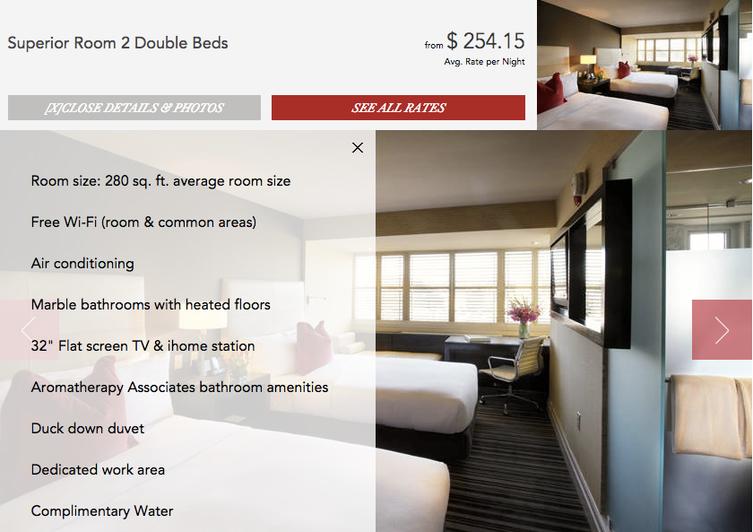
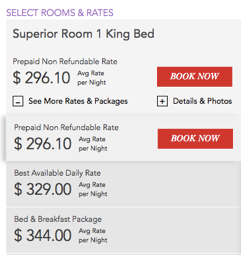
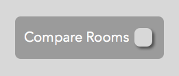
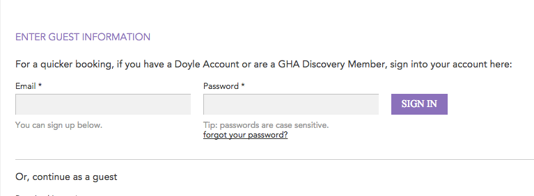
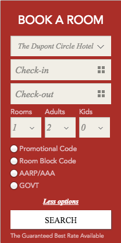
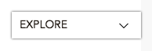
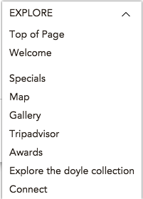

The dupont circle hotel is part of The Doyle Collection, an Irish family-owned luxury boutique hotel company, comprised of 8 properties in the US, Ireland and the UK. When I began studying UX Design, I was working concurrently at the Dupont Circle Hotel’s marketing, sales, and event team. The company re-designed and launched a new website, and I served on the web committee, which gathered feedback from management and guests about the site, and proposed changes to the corporate office. The launching of a new website presented a great opportunity to begin a practical learning experience with a hands-on usability study. The guest experience doesn't start at check in, it begins when they land on your website; I proposed my study to the Doyle Collection management and received their enthusiastic support.
Discover and Define
To begin my study, I interviewed different department heads and learned about what feedback and challenges there were with the current website. It was an ideal start to learning about their perspective, as the operations team has a lot of face to face time with guests and had the best insight into the guest expectations, aided by what they saw on the website.
Next, I put together a test plan, which was intended to: 1)identify the study's objectives1, 2) define the ideal participant qualifications, 3) the setting the testing environment 4) establish introduction procedures, 5) key tasks2, 6) define scenarios to achieve those tasks, and 7) develop a post-testing questionnaire. Once the test plan was completed, I searched for test participants.
1test objectives
- Gain customer insight, customer perception and learn about areas of improvement.
- Observe the behavior of users and determine website inconsistencies and usability problem areas with customer booking experience and content (visual and written).
- Test usability and accessibility for Booking/inquiry a room
- Identify user's perception and understanding about hotel amenities/banquet space etc.
- Methods of contacting the hotel
2user task
- Review Booking a guest room, start to finish
- Review Finding a room descriptions, details, and amenities
- Identify any guest room type differences
- Ask the user what they learned about the GHA/Doyle Collection Brand (During Booking Process)
- (see test plan for specific scenarios)
Once I had established the objectives and test plan - I began to recruit participants, by reaching out to qualified colleagues, a former bosses, and friends. Key recruitment requirements: 1)Age: 35 and over Income Level: 100k and over (Except meeting planner), 2) attempt 50/50 gender, 3)Frequent business and/or pleasure travel (at least 3x’s a month) 4)Certified Meeting Planner / Seasoned Event Planners (2 of 6 participants).
participant i
- Age: 41
- Occupation: Director of Information Technology / Regional Business, Consulting Firm
- Level of Education: Master’s Degree
- Annual Income: $100,000 +
- Travel Habits: 3-4 times monthly, business and pleasure
- Preferred Booking Methods: Kayak, Expedia, Hotels.com, Chase Credit Card points
particpiant ii tested remotely
- Age: 56
- Occupation: Chief Organization Officer / National Healthcare Organization
- Level of Education: 2 Master Degrees
- Annual Income: $250,000 +
- Travel Habits: 5+ times monthly, primarily business, occasionally pleasure
- Preferred Booking Methods: American Express Black Card Travel and Trip Advisor, Ritz Carlton, Fairmont, Four Seasons and other Luxury Hotels
participant iii
- Age: Declined to respond (estimated 52+)
- Occupation: Attorney at Law
- Level of Education: 2 Master Degrees
- Annual Income: Declined to respond
- Travel Habits: 2-3+ times monthly, business and pleasure
- Preferred Booking Methods: Google search (direct hotel booking), Hotels.com
particpiant iv
- Age: 44
- Occupation: Executive Director, Regional Non-Profit
- Level of Education: Master Degrees
- Annual Income: $70,000 +
- Travel Habits: 3+ times monthly, business and pleasure
- Preferred Booking Methods: Airnbn, google search
participant v
- Age: 36
- Occupation: Meeting and Event Planner, Regional For-Profit Company
- Level of Education: Bachelor Degree
- Annual Income: $42,000 +
- Travel Habits: 7+ times monthly, booking for business travelers with Company
- Preferred Booking Methods: Company approved business travel Hotels (Direct Website), Airnb, priceline
particpiant vi
- Age: 42
- Occupation: Event Planner, Nation Meeting/Event Planning Organization Agency
- Level of Education: High School
- Annual Income: $100,000 +
- Travel Habits:1+ times monthly, business and pleasure
- Preferred Booking Methods: Hotels.com, kayak, expedia, direct hotel bookings
Testing Overview
The usability test was formatted to learn about the user’s interaction, browsing and navigation through the website. The data collected was primarily qualitative findings, through observations of the user behavior from visual presentations and assigned tasks.
The actual testing took place at participants home and/or offices, which was prefered as it was a natural environment (one participant was tested remotely), and each session lasted between 60-90 minutes. The Users were asked to search and find the “Dupont Circle Hotel” main landing page, and describe their initial reaction and were free to browse the site, while expressing their perceptions. The users were then assigned specific tasks and/or scenarios to navigate through, while I observed their behavior4 seeking notable findings.
4observing participant behavior to find:
- Ease of use
- User understanding of the material
- Learning ability - how easy it would be for most users to learn to navigate the website
- Look and feel appeal – homepage’s content
- User perception of site content – Including visuals and writing
- User navigation through site information and structure
Results, Findings and Reccomendations
Generally, all participants had several issues5 throughout their navigation of the site and tasks ; mostly based on content information confusion, lack of clarity while navigating and lack of clickability. The general participant perception of the property was that the property was luxury, hip, stylish and European- owned.
5executive summary:
- Confusion determining information about the “Doyle Collection”
- Confusion about the room types offered
- Confusion about what hotel amenities are offered/included
- Confusion about what “Level 9” offers and/or what it is generally
- Confusion about the website writing content and language used (British slang)
- Irritation from the “Book Now” box on all pages
- Irritation with the booking calendar’s slow speed and European-style date entry
- Extreme Irritation at booking higher rates than displayed in the “rooms” table, where the rooms offer a rate “starting at”
- Lack of manual date inquiry entry, in the booking calendar
- Lack of accessible GHA/Doyle Collection general information
- Lack of information about dining options (namely “Bar Dupont” not listed)
- Lack of accessible room amenity details
- Lack of name/description of displays/visuals
6key user tasks
- Book a guest room, start to finish
- Find room descriptions/details/amenities
- Identify key guest room type differences
- Learn about the loyalty program and Brand
check mark indicates participant task completion
| Findings | Solutions |
| Users (5/6) were confused about European dates being presented in the booking tool – Date/Month/Year | Use American date format (Month/Date/Year)
(Updated) |
| Users (3/6) were irritated by the slow navigation of the calendar | Put a drop down menu for the “month/year” selection for quick month selection without scrolling(*)
(Updated)7 |
| Users (3/6) were confused when they could not enter the dates manually | Implement manual desired date entry into the date box in booking tool |
| Users were confused about package add-on features 8 (4/6 unsure about what the package included) - This prompted the users to want to learn more about packages (3/6). In addition, some users were interested in ensuring the room preferences were addressed prior to hitting the “Book Now” button (2/6). | Under the “See more Rates and Packages”, located in the booking rate display page – replace to “See more Rates, Packages and Preferences”. Then once the user clicks the drop box and selects preferred room option, there are then two tabs displayed– “Recommended Add-Ons” tab (offering package rates and clickable details) and the other tab “Preferences”8 (Offering room preferences, including high/low flow, handicap, special notes etc.) |
| Through the user navigation of the booking process, some users accidently left the page (5/6) – once they decided to return to the booking process, and were disappointed the dates had to be re-entered and weren’t saved. | Once a user enters desired dates, the dates should be saved in the booking tool during the user's browsing session, even if they leave the booking process |
7updated dropdown for quick navigation
8recommendation: add prefernce tab
| Findings | Solutions |
| Users (3/6) had trouble finding room descriptions (users found pictures) – For instance, in the booking option window, all users found and hit the drop down “details and photos”, however, they were only able to see the photos and (3/6) users did not notice the “View More Rooms” Button. This caused both confusion and irritation with the booking process. | Option I: Add room details directly to the picture upon drop down, using a slightly smaller font, so details can be viewed quickly and decrease the amount of clicks the user has. updated9 Option II: as the user clicks the room name for details, or an added “Room Details” button, the window should open with the details readily available, so the user does not have to make another click . |
| Users (6/6) were unable to determine any distinct amenity/room differences between the guest rooms (Suites Excluded). The only difference identified by all users was the difference in pictures between the “Deluxe and Superior” rooms, compared to the “Grand Deluxe Rooms”. This produced a general unease with booking a room, as they were unable to see any differences of the room type.10 | Add a “Compare”11 click option to the rooms options – When more than one room is clicked “Compare”, the button will change to “Compare Rooms” when the cursor is over the option. Once the user has selected two rooms to compare, they should be placed side by side displaying the contrasting room details. |
9updated: dropdown room details and scroll feature
10
11offer user tab to compare
| Findings | Solutions |
| -Users were confused about the “Doyle Account” and “GHA”, data entry upon entering the guest rooms entry (3/6) users began entering their email, quickly discovering that this was not the correct field | Add clickable links for the “Doyle Account” and “GHA” to offer the user brief information about the program |
| During guest registration, users did not fill out the “Intl Code” entry as they felt it was unnecessary, and were re-prompted to fill it out | Remove the “Int’l Code” button, as the user has already entered their country. If the user selects an outside country, then add the Int’l Code |
12pricing layout
| Findings | Solutions |
| Users were confused about the “Doyle Account” and “GHA”, data entry upon entering the guest rooms entry (3/6) users began entering their email, quickly discovering that this was not the correct field |
Add a closing option to the box and/or a minimizing option
Add a “Book a Room” option to the top of the landing page |
| The “Explore” tab was used by one participant. Other participants did not use/notice it and others expressed their irritation, as it obstructed an image e.g. the “Book a Room Now” tab. | This tab is generally unnecessary, and does not offer the user any practical benefits – Remove tab |
| Users (4/6) had a difficult time finding the arrows to move the picture gallery | Move arrows to the side of the picture and/or make the pictures able to move per click |
| 2/2 Users that were searching for meeting space details, were unable to determine if their scenario (75 ppl classroom setup) would be able to be hosted at the DCH. They both used the search tool, and were confused as to why they were entering the “Room” name without knowing what that rooms could accommodate. One user looked at the pictures to get a meeting room name, and was irritated that they pictures did not display the name. Both users where also confused by the “Find Room By Name” feature and entered inquiry details in the “Find a Room By Capacity” – Unclear about the results, both users attempted to click the name of the meeting space names (as instructed “Click Room Name to Download PDF Floor Plan | Remove “Find a Room By Name” - User does not know the names of the room or have any resource/visuals to learn about them. This is a confusing function, and deters the user from searching further. Remove “Find a Room By Capacity” – a PDF copy (printable) and visual spec sheet (Upon clicking the “Meeting Rooms Capacities” header for the user to navigate through |
| User had trouble expanding the visuals – It took some time to click the “Learn More” button.
-User found that the Menu section has no clickability, 2/2 Meeting Planner participants could not locate the menus. The “Menu” area has no options to learn more about the menu and/or selections |
Allow “Sustainable and Responsible Meetings”, “The Menu”, and “Services and Amenities” to be clickable to the user. User’s initially clicked these items to open the page |
r: add minimize option
remove
links not working
Deploy and Conclude
Overall, this site was a significant lesson in empathy. Feeling and understanding what others are expressing, even if you don’t agree with them, is a powerful way of connecting. Whether I was seeking to understand what users were looking for, or proposing an alternative solution to the client - An empathetic approach not only sharpened my ideas, but got to the bottom of what’s relevant and important.
lessons learned
- Don’t ever be afraid to throw away bad designs and start over.
- Always seek the user’s feedback from the beginning, middle and end - listen and implement
- Continually ask why, and be certain to find out why.
- When pushing back to the client, have well thought out alternative proposals and solutions ready to present.
- Relax, and enjoy, it’s a process.
Client Review
"When Kyle approached me about working over and replacing my existing website, he didn't tell me something I didn't already know. The website was in need of some serious updating. I wasn't expecting nearly anything so beautiful as Kyle created. While we did butt heads now and then over style and approach, I feel that we always understood each other on an essential level. "
-Eric Stein, Senior Manager